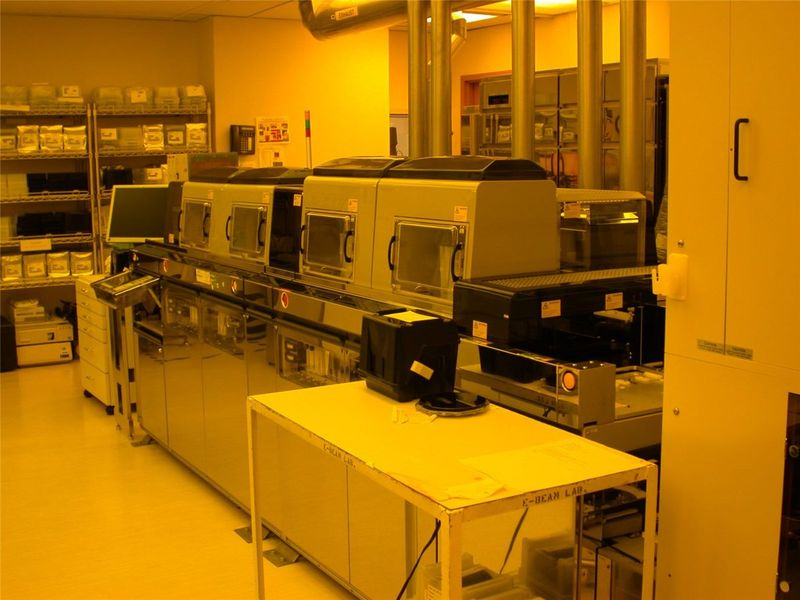

워싱턴서 '한미 전략산업·안보 포럼'… 반도체·조선·원전 협력 모색
트라이포럼이 미국 워싱턴DC에서 한미 전략산업·안보 포럼을 열었다. 반도체·조선·원전 등 전략산업에서 양국 협력 방안을 논의하는 자리다.
이문창 기자 · 2026.06.11
橋국제

조선일보에 따르면 이번 포럼에는 양국의 정·관계와 산업계 인사들이 참석해 공급망 협력과 안보 연계 방안을 논의했다.
광고 문의 · 300×250한미 산업 협력은 관세 협상과 맞물려 투자·구매 패키지 형태로 진화하고 있다. 조선업 협력(마스가 프로젝트)과 원전 수출 동맹, 반도체 공급망 재편이 핵심 의제로 꼽힌다.
워싱턴의 싱크탱크·로비 무대에서 한국 산업의 위상이 높아지는 흐름은, 미국의 제조업 재건 수요와 한국의 기술·시공 역량이 맞물린 결과라는 분석이 나온다.
전략산업의 향배는 한국 경제와 재한 화인 비즈니스 환경에도 영향을 준다. 華橋時報는 논의 내용을 사실 중심으로 전한다.
출처·참고 (사실 확인용 — 본문은 직접 재작성)
· 조선일보
· 조선일보